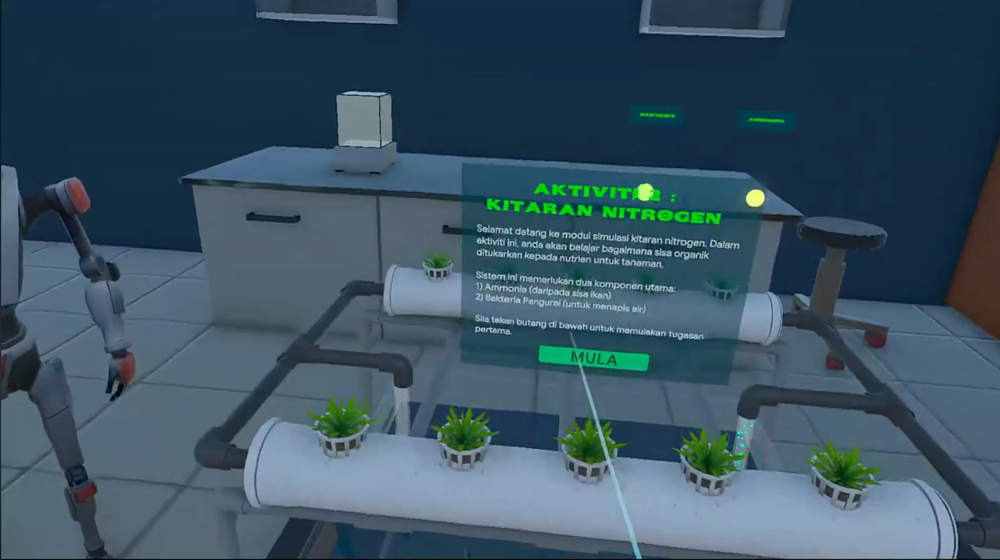
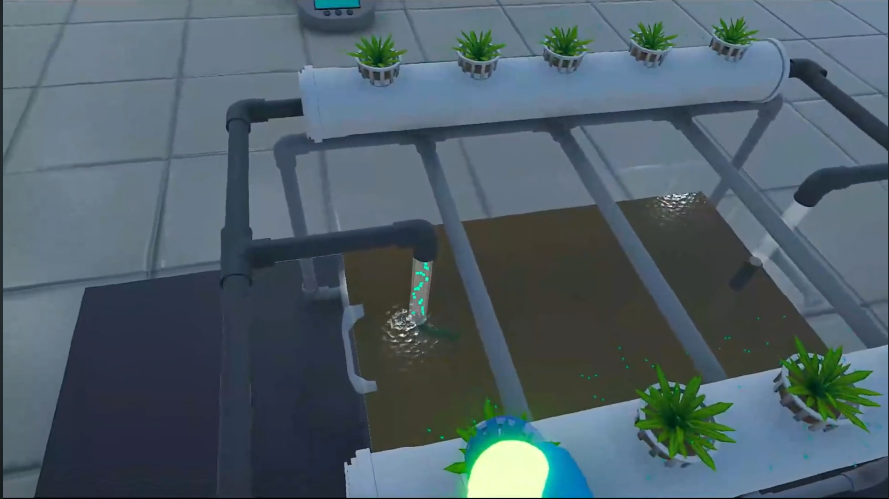
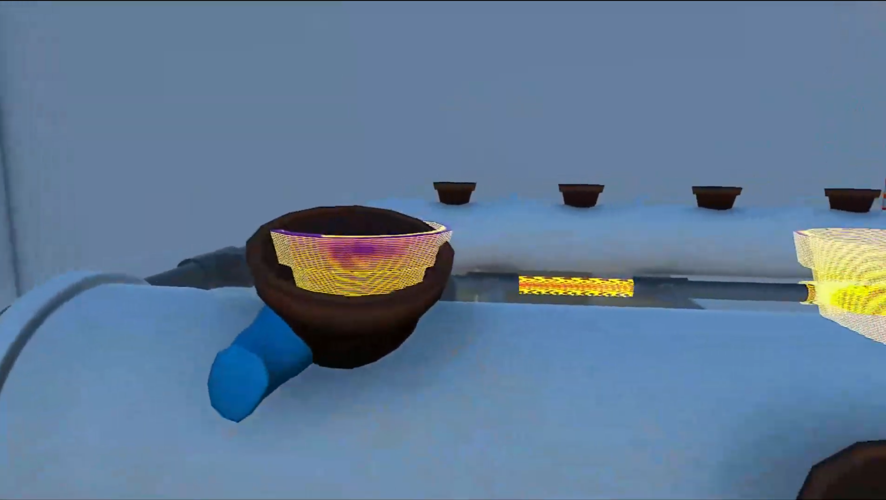

Empowering Education through Immersive Simulation
UI/UX & VR Developer
Jan - May 2026
Unity, C#, XR Toolkit
UMPSA (FYP)
VRQUAPONIC is a gamified VR simulator designed to transform passive agricultural education into an immersive, hands-on experience. Developed as an Undergraduate Project, the application provides a "digital twin" environment where students can master complex assembly without financial or physical risks.

Diegetic UI Layout for seamless immersion.Learning aquaponics in schools is restricted by high equipment costs (RM500–RM2,000) and space limits. Traditional 2D diagrams fail to convey technical procedural tasks, leaving a gap between theory and the practical skills required to build functioning systems.

Bridging the gap between theory and practice.I developed a standalone VR simulation featuring interactive 3D models and a diegetic UI system. By guiding users through step-by-step installation, such as bell siphon assembly, the app allows for repeatable, zero-risk practice that improves technical proficiency.

Interactive assembly mechanics in Unity.